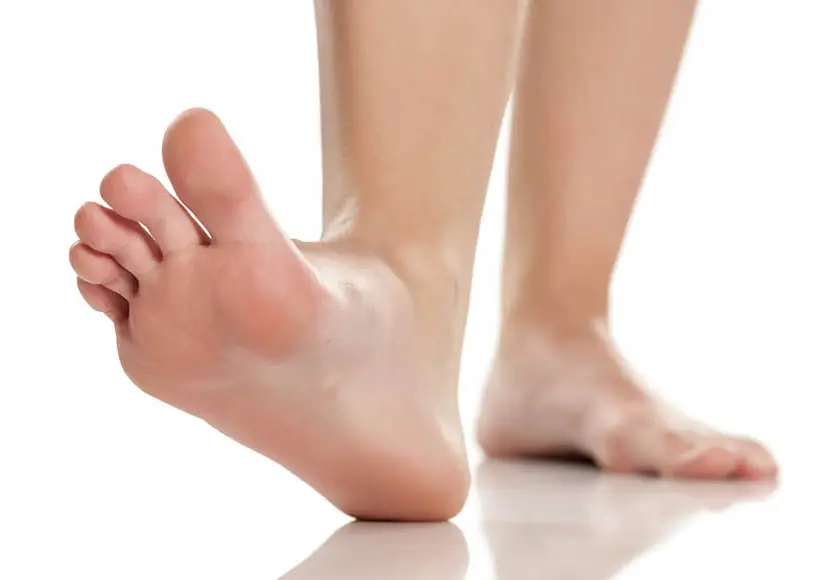
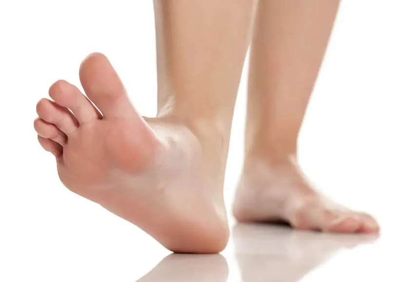

Los pies soportan el peso del cuerpo y permiten la movilidad. Cuidar la higiene, el calzado adecuado y la postura es fundamental para mantenerlos saludables.
 Volver al mapaLos pies soportan el peso del cuerpo y permiten la movilidad. Cuidar la higiene, el calzado adecuado y la postura es fundamental para mantenerlos saludables.
 Volver al mapa